Una placa controladora es un dispositivo que almacena un programa y que, mediante periféricos de entrada y salida, interactúa con el entorno que la rodea.
La placa recibe información del entorno a través de los sensores que se le conectan, tal como hacen nuestros sentidos. A su vez actúa sobre su entorno mediante los actuadores. Ambos componentes se conectan a la placa controladora a través de sus pines o conectores. Estos pines o conectores son las entradas y salidas de casi toda la información que pasa por la placa.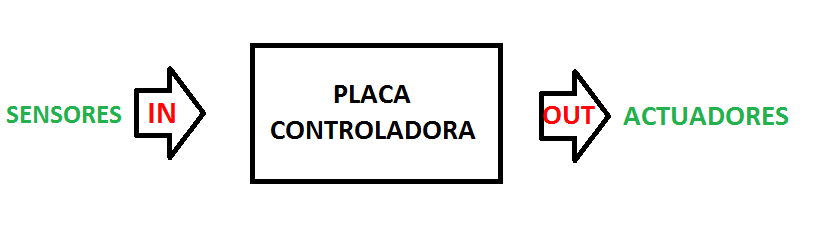Figura 1. Esquema flujo de información en la placa controladora.
El elemento fundamental de una placa controladora es el microcontrolador. Es el encargado de controlar el sistema, como un cerebro. El microcontrolador (o
simplemente micro) es el circuito integrado más importante y complejo de un sistema informático. Es un elemento programable, capaz de realizar operaciones matemáticas a una velocidad extraordinaria.
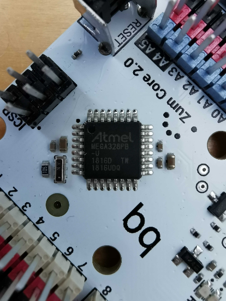Figura 2. Detalle del microcontrolador.
Para que el microcontrolador pueda leer la información de los sensores y actuar a través de los actuadores, debemos darle una serie de órdenes, es decir,
programarlo. Un programa es una serie de instrucciones que definen el comportamiento de la placa controladora. Ésta obtiene información a través de los
sensores y realiza las acciones dictadas por el programa en función de dicha información.
En este curso vamos a trabajar con la placa controladora Zum Core, la cual está basada en la tecnología Arduino, habiendo sido adaptada para su uso educativo.
La familia electrónica Arduino conforma un proyecto libre, cuyo objetivo es el de democratizar el uso y aprendizaje de la electrónica, haciéndola accesible a cualquier persona, independientemente de sus conocimientos previos.
Arduino(TM) es además una marca registrada de electrónica libre, creada por la empresa Arduino en 2004. Utilizando microprocesadores de la marca Atmel crearon varios modelos de placas controladoras muy fáciles de programar gracias al entorno de desarrollo creado por la misma empresa y conocido como ArduinoIDE. Muy rápidamente se creó una vasta comunidad de usuarios, formada por cientos de miles de personas, que contribuyeron al proyecto creando bibliotecas para trabajar con una gran variedad de periféricos.
Por su naturaleza libre (diseñado para que cualquiera pueda usarlo, entenderlo, aprender de él, modificarlo y redistribuirlo) surgieron además empresas que
realizaron modificaciones a las placas, adaptándolas a otras necesidades y creando nuevos periféricos que pudieran usarse con ellas.
Esta proliferación de usuarios y empresas es la que ha conseguido que la familia Arduino sea la más extendida en el mundo educativo, así como el conocido como DIY (Do it yourself o Hazlo tú mismo).
Por todo ello, para trabajar en este curso la robótica y la programación, utilizaremos el kit Zum Kit Advanced, que está adaptado para Secundaria, teniendo la placa y los componentes electrónicos visibles (no encapsulados) y adaptados para una conexión mediante pines.
La placa Zum Core posee 20 pines de entrada o salida distribuidos entre pines digitales y pines analógicos. Más adelante veremos el tipo de componentes que podemos conectar a cada uno de ellos.
En esta placa, podemos ver el microcontrolador, donde se almacena el programa para poder ejecutarlo. Cargaremos este programa a través de la entrada Micro USB.
El botón Reset nos sirve para reiniciar el programa y que este vuelva a comenzar desde el principio.
Para alimentar energéticamente a la placa también utilizamos la entrada Micro USB o la entrada de baterías, de entre 6 y 17 Voltios. El interruptor On/Off nos permite cortar el paso de corriente a toda la placa, aunque esté conectada a una fuente de alimentación.
Por último, el componente Bluetooth integrado, permite comunicar a la placa (sin cables) con otros dispositivos que tengan este tipo de comunicación: ordenadores, smartphones, etc.
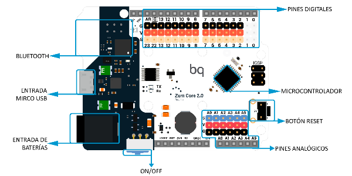
Figura 3. Zum Core 2.0 - Placa de la familia Arduino optimizada para robótica.
Sensores y actuadores
La palabra robot proviene del checo: robota, que significa trabajo duro o forzado. Se usó por primera vez durante la obra de teatro Rossum Universal Robots de Karel Čapek y su uso se extendió gracias a las obras de ciencia ficción creadas por el escritor Isaac Asimov.
A menudo nos imaginamos a un robot como una máquina con forma humana que camina, habla, gesticula... pero en realidad es algo mucho más sencillo:
“Un robot es una máquina automática programable que es capaz de interpretar información del medio físico para modificar su conducta. Tiene la capacidad de interactuar con el entorno y, en función de ello, realizar unas funciones u otras.”
Todo robot tiene tres tipos de componentes:
▶ Sistema de control: como una placa controladora.
▶ Sensores: capaces de interpretar información del mundo o del propio robot. Son dispositivos que pueden leer las condiciones del entorno y transformarlas en señales eléctricas. Transmiten más o menos electricidad en función del elemento físico: luz, sonido, distancia, etc.
▶ Actuadores: producen un efecto sobre el mundo o sobre el propio robot. Un actuador es un dispositivo capaz de transformar señales eléctricas en un proceso físico, como luz, sonido o movimiento con la finalidad de realizar un cambio sobre el mundo. Por ejemplo, un motor que mueve una rueda, un LED que indica que un aparato está encendido, un altavoz que emite un sonido de alerta, etc.
Si comparamos un robot con una persona, los sensores serían sus sentidos. Éstos transmiten información a su sistema de control o cerebro, modificando su
comportamiento e influyendo sobre el mundo mediante sus actuadores. Además, un robot necesitará una fuente de energía para funcionar y una estructura física para sostener los elementos que lo componen.
El cerebro o la placa controladora es como un pequeño ordenador. Básicamente es un microcontrolador al que se le pueden conectar sensores (sentidos), y actuadores (músculos, voz, etc).
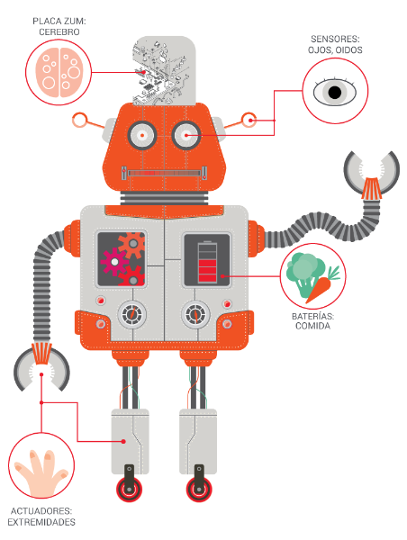
Figura 4. Comparativa robótica y cuerpo humano
Componentes digitales y analógicos. Placa Zum Core
Los componentes asociados a la placa controladora tipo Zum Core, se pueden clasificar en dos categorías, digitales y analógicos. Podemos conectar estos
componentes a la placa controladora a través de sus pines que, como ya hemos visto anteriormente, están divididos en pines digitales y pines analógicos. Vamos a ver sus diferencias:
▶ Componentes digitales: son aquellos componentes que sólo pueden tener dos valores, 0 o 1. Pueden ser tanto sensores como actuadores y los conectamos a los pines digitales de la placa. En las placas Zum Core existen 14 pines digitales diferenciados por los colores negro, rojo y blanco.
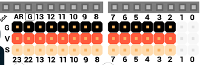
Figura 5. Pines digitales placa Zum Core.
• Si conectamos un sensor, éste enviará un valor de 0 Voltios (0 lógico) o 5 Voltios (1 lógico) a la placa. Un ejemplo de sensor digital es un botón que
cuando lo pulsamos manda un 1 y cuando no lo pulsamos manda un 0.
• Si conectamos un actuador, es la placa la que escribirá el valor de 0 Voltios o 5 Voltios y hará que se encienda o se apague el actuador
correspondiente. Un ejemplo de actuador digital es un LED que cuando la placa le envía un 1, este emite luz y cuando le manda un 0, este deja de
emitir luz.
IMPORTANTE. Los pines digitales numerados en la placa con 0 y 1 se usan para recibir y enviar información, por lo que si conectamos un componente y
programamos la placa, puede que el programa no se cargue o no funcione correctamente. Además, el pin digital número 13 no recibe la misma tensión, por lo
que puede dar problemas en el uso de algunos elementos. Debemos usar con precaución dichos pines si la placa los tiene habilitados para su uso.
▶ Componentes analógicos: son aquellos componentes que pueden tener todo un rango de valores. Se conectan a los pines analógicos de la placa que, en este caso, sólo se utilizan como entradas, es decir, sólo podemos conectar sensores.
Estos pines, en lugar de leer solamente los valores de 0 Voltios o 5 Voltios, pueden leer cualquier valor comprendido entre ellos, por ejemplo, podrían leer
un valor de 3 Voltios. Estas lecturas se traducen al microcontrolador con un valor entre 0 y 1023. Es decir, si lee 0 Voltios, al micro le llega un 0. En cambio, si lee 5 Voltios, le llega un 1023. Un ejemplo de sensor analógico es un sensor de luz, donde dependiendo de la cantidad de luz que el sensor recibe enviará un valor mayor o menor. En las placas Zum Core existen 6 pines analógicos diferenciados por los colores negro, rojo y azul.
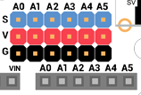
Figura 6. Pines analógicos placa Zum Core.
Vamos a ver los distintos componentes que podemos utilizar con la placa Zum Core divididos entre sensores y actuadores:
| SENSORES |
| Botón |
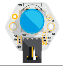 |
Es un sensor digital que se activa cuando se pulsa, permitiendo que circule por él la corriente, y se desactiva cuando se deja de pulsar. Se pueden programar distintas acciones asociadas a su estado:
- pulsado (1 ó verdadero)
- no pulsado (0 ó falso)
Se encuentra en numerosos dispositivos que utilizamos a diario, como timbres de puerta, batidoras, calculadoras, teclados de ordenador, lavadoras, ascensores, etc. |
| Sensor de luz o LDR (Light-Dependent Resistor) |
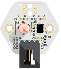 |
Es un sensor analógico compuesto por una resistencia que modifica su valor cuando hay más o menos luz. Cuanto mayor sea la intensidad de luz, más baja será la resistencia al paso de la corriente.
Devuelve un rango de valores comprendidos entre 0 (cuando la oscuridad es total) y 800 (a plena luz del sol en un día despejado). |
| Sensor de infrarrojos |
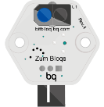 |
Es un sensor digital que emite una luz infrarroja detectando la cantidad de luz reflejada. De esta forma, es capaz de
diferenciar entre el color blanco y el negro, o de detectar objetos próximos.
Devolverá un 1 ó verdadero cuando detecte blanco (o un objeto sobre el que refleja la luz) y un 0 ó falso cuando detecte negro. |
| Sensor de ultrasonidos |
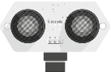 |
Sensor digital capaz de medir la distancia a un obstáculo a través de ondas sonoras.
Este tipo de sensores tienen dos partes, una es el emisor que emite la señal y la otra el receptor que recibe la señal si ésta rebota sobre algún obstáculo cercano.
Este sistema es el mismo que utilizan los murciélagos para orientarse, y se aplica de forma similar en robótica para detectar obstáculos y medir distancias. |
| Potenciómetro |
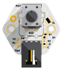 |
Sensor analógico que se compone de una resistencia variable, es decir, un componente que permite regular la intensidad de la corriente eléctrica de un circuito.
Se utilizan en muchos dispositivos, como en lámparas para regular la intensidad de luz o en equipos de música para ajustar el volumen.
El potenciómetro devolverá valores entre 0 y 1023. |
Tabla 1. Sensores kit Zum Core.
| ACTUADORES |
| LED |
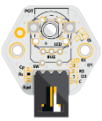 |
El LED emite luz cuando circula la electricidad a través de él y es un componente digital ya que solo puede tener dos estados: encendido y apagado.
Los LED son baratos, gastan muy poca energía y pueden llegar a ser muy luminosos. Se utilizan mucho en sistemas electrónicos y están sustituyendo a la iluminación tradicional. |
Servo de rotación
continua |
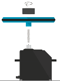 |
Es un motor que permite controlar la dirección de su giro. Es muy utilizado en electrónica, por ejemplo, en ascensores,
escaleras mecánicas, lectores de DVD, etc. |
| Servo |
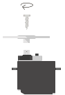 |
Permite elegir a qué posición o ángulo debe moverse, de entre 0 y 180 grados, . |
| Zumbador |
 |
Es un componente digital capaz de reproducir sonidos a diferentes frecuencias.
Son utilizados en multitud de sistemas para producir sonidos o alarmas como despertadores, timbres, electrodomésticos,
etc. |
Tabla 2. Actuadores kit Zum Core.
Primeros pasos con Bitbloq
La plataforma elegida para programar la placa será Bitbloq, que es un entorno de desarrollo basado en Scratch, primera herramienta en proponer la programación por bloques para que los niños se iniciasen en el mundo de la programación.
Mientras Scratch se utiliza para programar videojuegos o animaciones en pantalla, Bitbloq sirve para programar placas controladoras y, por ello, son dos complementos perfectos.
Al ser un lenguaje de programación por bloques, no hace falta escribir complicadas líneas de código, aunque sí permite visualizar cómo quedaría el código que vamos programando para facilitar el paso de bloques a código.
El objetivo principal de Bitbloq es aprender los conceptos básicos de programación, como las variables, los bucles o los condicionales, de manera que cuando aprendamos cómo piensa una máquina, podamos programar cualquier cosa.
Como ya hemos comentado antes, Bitbloq es una herramienta que permite la programación por bloques de placas basadas en Arduino, como las placas Zum Core.
Registro
Bitbloq permite trabajar en su plataforma de dos formas: como invitado o con una cuenta de usuario. Esta última opción tiene la ventaja de que se pueden guardar los proyectos que se van creando, descargarlos, verlos o modificarlos cuando se quiera y compartirlos con la comunidad. Para crear una cuenta de Bitbloq debemos tener un correo electrónico propio y tener al menos 14 años.
Accedemos a https://bitbloq.cc/, desde el navegador Google Chrome, y seleccionamos la opción Crear una cuenta, que se encuentra en la esquina superior
derecha.
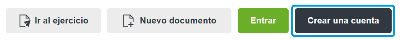Figura 7. Registrarse en Bitbloq.
IMPORTANTE. Bitbloq está optimizado para su funcionamiento en la última versión de Google Chrome o Chromium, por lo que aconsejamos la utilización de estos navegadores.
A continuación, introducimos los siguientes datos personales: nombre de usuario, email, contraseña y fecha de nacimiento. También podemos registrarnos utilizando el perfil de una cuenta de Microsoft o de Google. Para finalizar, debemos aceptar las condiciones activando la casilla He leído y acepto las condiciones generales y políticas de privacidad, y pulsar en el botón Guardar.
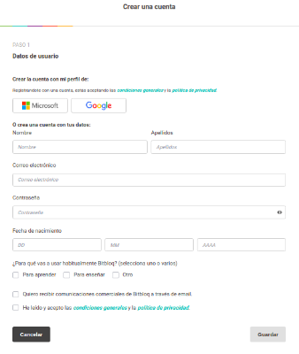Figura 8. Datos personales.
Tras este paso, podemos elegir si añadir o no el Plan Docente de Bitbloq. Seleccionamos la opción y luego hacemos clic en Crear cuenta.
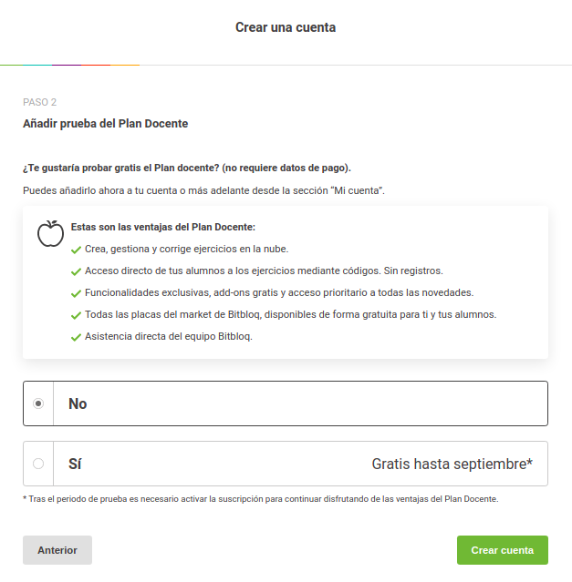
Figura 9. Registro: Plan Docente
A continuación, tendremos que acceder a nuestro correo electrónico para validar la cuenta.
Una vez completado el registro podemos iniciar sesión en Bitbloq yendo a su página principal y haciendo clic en Entrar.
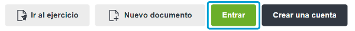Figura 10. Entrar
Tras esta acción, nos aparecerá la página de Mis documentos. Aquí podemos crear nuevos documentos de diversos tipos o ver los ya creados.
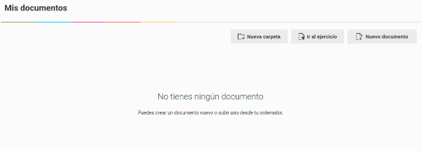Figura 11. Mis documentos
Dentro de nuestra cuenta, en Mis documentos, podemos buscar o cambiar el orden en el que se ordenan los documentos.
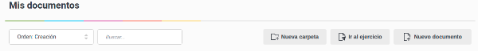Figura 12. Orden de documentos
También podemos crear nuevas carpetas, para ordenar los documentos como necesitemos.
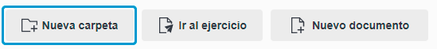Figura 13. Nueva carpeta
Para empezar a programar con esta herramienta, hacemos clic en Nuevo documento / Bitbloq Robotics.
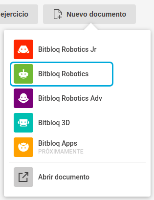Figura 14. Abrir un nuevo documento
IMPORTANTE. Los alumnos menores de 14 años utilizarán Bitbloq sin haberse registrado previamente. Pueden hacer clic en Nuevo documento y elegir bitbloq Robotics o bien hacer clic en Ir al ejercicio e introducir el código de un ejercicio ya creado en una cuenta con Plan Docente.
Instalación de los drivers
Para el correcto funcionamiento de Bitbloq y comunicar la placa con el ordenador para cargar programas, es muy importante tener en cuenta:
Tener la última versión del navegador Google Chrome. Se puede comprobar la versión instalada pulsando sobre los 3 puntos del navegador (esquina superior derecha), y seleccionando la opción Configuración y después Información de Chrome.
Si se está trabajando con Sistema Operativo Windows, se deben descargar los drivers de la placa controladora pulsando aquí.
Los ordenadores con Linux, no necesitan drivers, para Sistemas Operativos Mac podemos encontrar los drivers aquí.
Una vez completada la instalación es recomendable que reiniciemos el ordenador.
Para comprobar que se ha completado la instalación correctamente, debemos conectar la placa a nuestro ordenador, volver a abrir Bitbloq, arrastramos la placa controladora en la pestaña Hardware, vamos a la pestaña Bloques y pulsamos en Cargar.
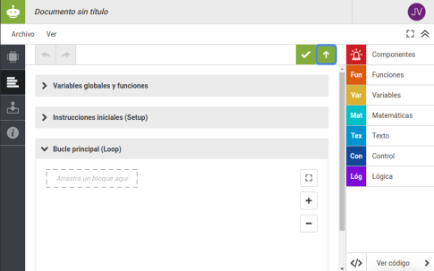Figura 15. Cargar un programa.
Tras cargar el programa en la placa, aparece en la pantalla el mensaje “Cargada con éxito”, que nos indica que todo ha funcionado correctamente.
Cómo programar la placa controladora con Bitbloq
Para comenzar a programar accedemos a https://bitbloq.cc/, nos logueamos si tenemos cuenta, hacemos clic en Nuevo documento y a continuación en Bitbloq Robotics. En la pestaña Hardware seleccionamos la placa controladora con la que estemos trabajando, los componentes que vamos a utilizar y los pines o conectores de la placa a los que los vamos a conectar.
Para ello, desde la pestaña Placas, arrastramos nuestra placa hasta el espacio marcado. Desde la pestaña Componentes, arrastramos los elementos hasta la zona blanca que rodea la placa. Podemos cambiar el nombre del componente si lo deseamos. Será conveniente cuando tengamos más de un componente del mismo tipo, por ejemplo, dos LED. Conectamos el componente a la placa controladora haciendo clic en el punto verde que se encuentra en la parte inferior del mismo y arrastrando hasta el pin o conector deseado. Es importante conectar los componentes en Bitbloq en los mismos pines o conectores que en la placa física.
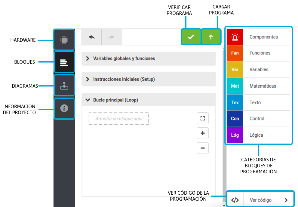Figura 17. Interfaz pestaña Bloques en Bitbloq.
En la pestaña Bloques, se construye la programación arrastrando los bloques desde la categoría correspondiente hasta el área de programación. Este área está dividida en tres partes:
● Variables globales y funciones: permite declarar variables y funciones, que utilizaremos más adelante.
● Instrucciones iniciales (Setup): permite configurar las acciones que queremos ejecutar al principio y solo una vez.
● Bucle principal (Loop): es la parte en la que programamos más a menudo.
Todo lo que se encuentre dentro se ejecuta en bucle de forma indefinida.
Los bloques estarán bien colocados cuando se coloreen.
Debemos saber que la programación en Bitbloq es secuencial, es decir, que la placa controladora lee y ejecuta la programación de arriba a abajo. Si además esta programación la colocamos en el Bucle principal (Loop), el programa se repetirá una y otra vez.
Una vez realizado el programa hacemos clic en Verificar para comprobar que todo está correcto y posteriormente en Cargar, para programar la placa controladora. En este momento aparecerá una ventana emergente indicándonos que seleccionemos el puerto serie donde tenemos conectada la placa. Hacemos clic en el correspondiente y seguidamente en Conectar.
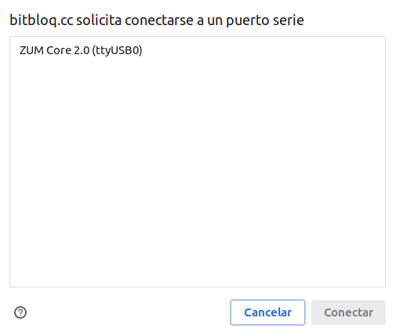Figura 18. Seleccionar una placa.
Cuando termine de cargarse la programación en la placa controladora, aparecerá el mensaje “Cargada con éxito” y se ejecutarán las instrucciones programadas.
IMPORTANTE: La placa, y no el ordenador, es la que almacena y ejecuta cada programa. Cada vez que realizamos una modificación en el programa, debemos cargarlo de nuevo en la placa para ver su efecto. La placa puede almacenar solamente un programa a la vez, de modo que cada vez que cargamos uno nuevo, el anterior desaparece. Este programa permanecerá aunque desenchufemos la placa de la fuente de alimentación.
Debajo de la pestaña Bloques podemos encontrar la pestaña Diagramas, que nos permitirá ver el diagrama de flujo del programa que hayamos creado con los bloques y lo contrario, realizar un diagrama de flujo y ver el programa que se ha generado. En la sección 2.5 de este documento se especifica brevemente en qué consisten los diagramas de flujo y de qué partes constan.
Finalmente, en la pestaña Información del proyecto, se puede documentar el proyecto añadiéndole una descripción, un enlace a un vídeo, una imagen etc.
Nuestro primer reto: ¡Hola mundo!
Empezamos por el programa más simple que podemos realizar, nuestro ¡Hola mundo!
En programación se llama “Hola mundo” al primer programa que se realiza cuando se está aprendiendo un lenguaje de programación. Cuando se programa una placa controladora, el “Hola mundo” consiste en hacer parpadear un LED para comprobar que todo funciona correctamente. Encender un LED
Vamos a conectar la placa controladora al ordenador con el cable USB y un LED a la placa. Es importante que nos aseguremos de que los colores de los cables del componente coinciden con los colores del pin al que lo vamos a conectar: el negro con el negro, el rojo con el rojo y el amarillo o blanco con el amarillo o blanco. En este caso lo conectaremos en el pin 5.
Una vez conectado físicamente abrimos un documento nuevo en Bitbloq Robotics y en la pestaña Hardware colocamos la placa y el LED, en la misma posición que lo habíamos colocado físicamente.
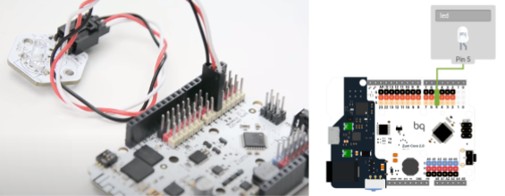Figura 19. Componente LED conectado a la placa controladora Zum Core.
Ahora nos dirigimos a la pestaña Bloques, donde programaremos el proyecto. Desde la categoría Componentes, seleccionamos el bloque Encender/Apagar el LED y lo arrastramos dentro de la zona Bucle Principal (Loop).
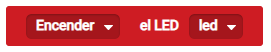Figura 20. Bloque encender/apagar el componente LED.
En la parte superior derecha, hacemos clic en Verificar para comprobar que todo está correcto y posteriormente en Cargar.
Cuando aparezca el mensaje “Cargada con éxito”, se ejecutará el encendido del LED.
Haciendo parpadear el LED
Ahora vamos a ver cómo podemos hacer que el LED parpadee.
Primero debemos recordar que la programación en Bitbloq es secuencial, lo que va a implicar que el programa se va a ejecutar de arriba a abajo y, si está colocado en el Bucle principal (Loop), se repetirá una y otra vez.
Sabiendo esto, podemos pensar que las instrucciones que debemos dar a la placa para hacer el parpadeo son Encender LED - Apagar LED, dentro del bucle para que se repitan indefinidamente. Sin embargo, nuestra placa controladora piensa muy rápido, si le decimos que apague el LED tras darle la orden de encendido pasará de una orden a otra demasiado rápido y dará la sensación de que el LED está encendido siempre.
Para solucionarlo tenemos que hacer esperar un tiempo mediante el bloque Esperar que encontramos en la categoría de Control, en la pestaña Básicos.
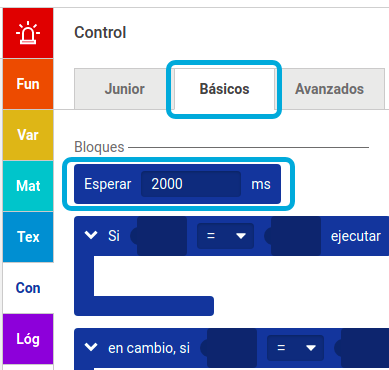Figura 21. Bloque Esperar.
Este bloque hace esperar al programa el número de milisegundos que decidamos.
En nuestro caso vamos a hacer que el LED parpadee con una cadencia de un segundo, por lo que escribiremos 1000 milisegundos. Tras la espera podemos apagar el LED y, como el programa se repite indefinidamente, deberemos esperar otro segundo antes de volver a empezar.
La secuencia de acciones para que parpadee un LED (con una espera de 1 segundo) será entonces: Encender - Esperar 1 segundo - Apagar - Esperar 1 segundo - Encender - etc.
El programa quedaría de la siguiente manera:
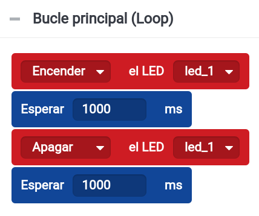
Figura 22. Programa parpadeo LED.
Haciendo parpadear dos LED. Acciones secuenciales que parecen simultáneas
¿Cómo podemos hacer que dos LED se enciendan a la vez y se apaguen a la vez?
Como ya sabemos, la programación en Bitbloq es secuencial y la placa controladora solo puede hacer una cosa a la vez, por lo que las acciones que programemos solo pueden ir una detrás de otra. Sin embargo, también hemos visto ya, que nuestra placa realiza las acciones a mucha velocidad y, cuando no hay un tiempo de espera, estas acciones pasan tan rápido que parece que tengan lugar simultáneamente.
Vamos a ver entonces cómo realizar el parpadeo.
En este caso conectaremos dos LEDs a nuestra placa controladora indicando en la pestaña Hardware a qué pines los hemos conectado.
Al conectar dos componentes del mismo tipo, nos será más fácil programarlos si le ponemos un nombre a cada uno para diferenciarlos. Pero si no lo hacemos, Bitbloq generará un nombre específico automáticamente. Este nombre nos permitirá seleccionar en el bloque sobre qué LED queremos actuar.
La programación quedará de la siguiente manera:
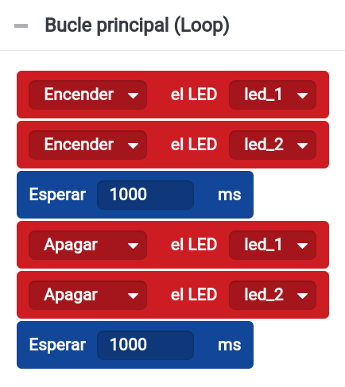Figura 23. Programa parpadeo dos LED.
Si hemos programado la placa correctamente, los dos LED deberán encenderse y apagarse al unísono.
IMPORTANTE. A veces creamos un proyecto que no se comporta como habíamos pensado. Recuerda que la placa controladora es el cerebro de nuestra máquina, pero es mucho más limitado que un cerebro humano.
La placa controladora:
▶ Piensa (procesa) las cosas de una en una, no puede hacer dos cosas a la vez.
▶ Piensa y repite acciones muy rápido, tanto que a veces no podemos ni ver lo que está haciendo y hay que decirle que espere un poco.
▶ Nunca hace nada que no le hayamos dicho. Tenemos que programar todo lo que queramos que haga y darle las órdenes de una en una.
▶ Normalmente, cuando la placa acaba su lista de órdenes, vuelve a empezar de nuevo, repitiendo su programación una y otra vez.